Skill Set
My journey has involved working on diverse projects, employing a range of frontend technologies and concepts. I am open to embracing new technologies and methologies to Continously enhance my skills and stay ahead in the ever-evolving landscape of web development.
You need another skill
Feel free to contact me. I look forward to expanding on my previous knowlegde.


 

 
